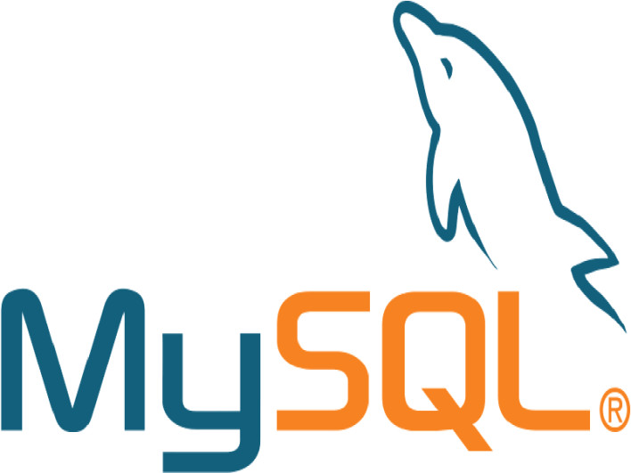

Welcome!
My Name is Bayli Miller. I am a graduate of the Busines of College at California State University, Monterey Bay. My concentration is in Information Systems and I specialize in Data Analysis. I am from the Sacramento area of Northern California and I enjoy being outdoors and reading.


Since moving to Monterey, two activities now consume much of my leisure time. Read more about them by clicking the arrows below.
I disc golf.
In 2015, I joined my boyfriend to throw some plastic frisbees - known as "discs" - at an open-space park in Monterey called Ryan Ranch with the concept similar to a round of golf where the goal was to toss the frisbee into the basket in as few throws as possible. The leisure sport quickly became a hobby and introducted me to a whole community of fellow disc golfers in the area who have become great friends and acquaintances. The hobby even presented the opportunity for me to join the CSUMB Women's Disc Golf Team where we competed in the 2016 National Collegiate Disc Golf Championships and contributed to the Women's Team winning their second National title in a row. Click on the photo below to read an article about our win at Nationals last April '16, in the Otter Realm.
I knit and crochet.
One day in 2014, I came across some used knitting needles at the Goodwill and decided to teach myself how to knit. I bought some yarn from the craft store and watched videos on YouTube to learn how to knit. By the end of the week, I had finished my very first handmade scarf and have been hooked on needlework since, including crochet.I chose to pick up this hobby due to the colder tempatures of the Central Coast and my constant need for a scarf and beanie, but also for the challenge which reminded me that I can still always learn something new every day.
My favorite garmets to knit or crochet include beanies, scarfs, beverage cozys, and baby blankets which I enjoy gifting to friends and family. When I have time to, I also enjoy selling these handmade items on Esty.com. Here are a few of the pieces I have made:
About Bayli Miller
I'm a 27-year-old professional with five years of experience working in Accounting, Finance, Operations, Payroll, Database Systems, and Information Technology.
I am originally from Woodland, CA where I worked for several agricultural companies in the area including Farm Fresh to You, Capay Organic, TSL Seed Company, and several local labor contractors. It was in these jobs that I gained my interest and experience in report writing, data mining, data analytics, and data warehousing.
In 2014, I moved to Monterey, CA to study Business at CSU Monterey Bay and plan to graduate from there with a Bachelors Degree in Business Administration with a concentration in Information Systems in May 2017. I enjoy living in Monterey because of its close proximity to the beach, its beautiful coastal weather, and the thriving agricultural industry of the Central Coast.
Educational Timeline
2017
-
Graduating College with BBA
From CSU Monterey Bay studying Business Information Systems.
2016
-
Started New Job Position
Began working as a Database Specialist for TS&L Seed's Finance department.
2015
-
Started at 4-year College
Began studing Business Information Systems at CSU Monterey Bay.
-
Earned Second AA Degree
From Cabrillo College studying General Business.
2014
-
Started New Job
Began work as an inventory clerk with TS&L Seed, a produce seed distributor in Salinas, CA.
-
Moved to Monterey
Moved to Monterey, CA to further my education, choosing CSU Monterey Bay's College of Business as my desired school while completing required prerequisites at Cabrillo College first.
-
Quit my Job
Decided my AA in Psychology wasn't going to advance me far enough toward my professional goals, so I decided to go back to school to complete my BBA in Business Information Systems.
2013
-
Received AA in Psychology
From Sierra College.
2011
-
First Professional Job
Began working as an Accounting Clerk for Farm Fresh to You in West Sacramento, CA.
Responsive HTML Timeline Inspired by the talented Dave Rupert.
Professional Background
I have worked with several successful agricultural companies in Northern and Central California on projects in areas of accounting, payroll, finance, yield management, inventory management, data mining, and data analytics. Below are a few of the major businesses I have worked with.
Recent Projects
| Year | Name of Project | Client Name | Software Used | Details & Responsiblities |
|---|---|---|---|---|
| 2017 | Website Development | Hotel 1110 | Adobe Dreamweaver | Used Adobe Dreamweaver to design a website to assist in attracting new customers and to display the many services and ammenities of service for Hotel 1110, a small boutique hotel located in the heart of Monterey. |
| 2016 | Asset Management DBMS | County of Monterey | MS Access | Used MS Access to develop database management system for the County of Monterey to assist in the tracking of financial and capital activity in the region to assist in strategic planning and decision making. |
| 2016 | Built Data Warehouse | Spade and Plow Organics | Excel, VBA | Used Visual Basics (VBA) as programming language in Excel to create and customize a data warehouse of all operational activity for local organic farm in Morgan Hill, CA to use in tracking day-to-day metrics such as product availability and yield planning/ management. |
Skills and Software
I have extensive experience working with the following software and core technologies in the field of Big Data, Business Analytics, and E-Commerce.




Spoken Languages
| Language | Years Spoken |
|---|---|
| English | Since birth |
| Spanish | 2 years |